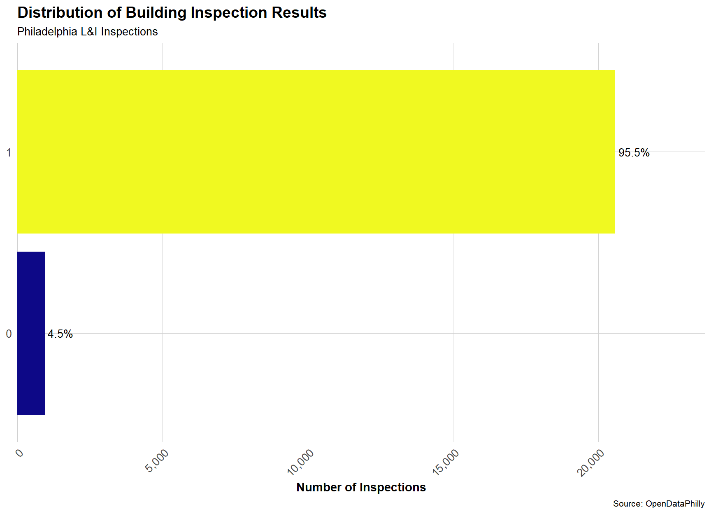
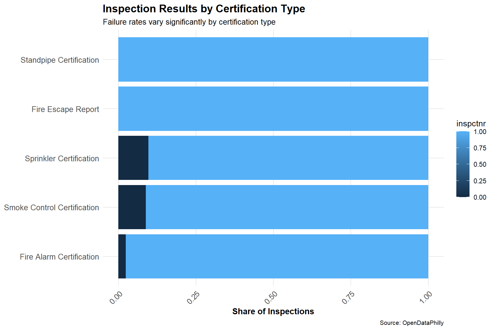
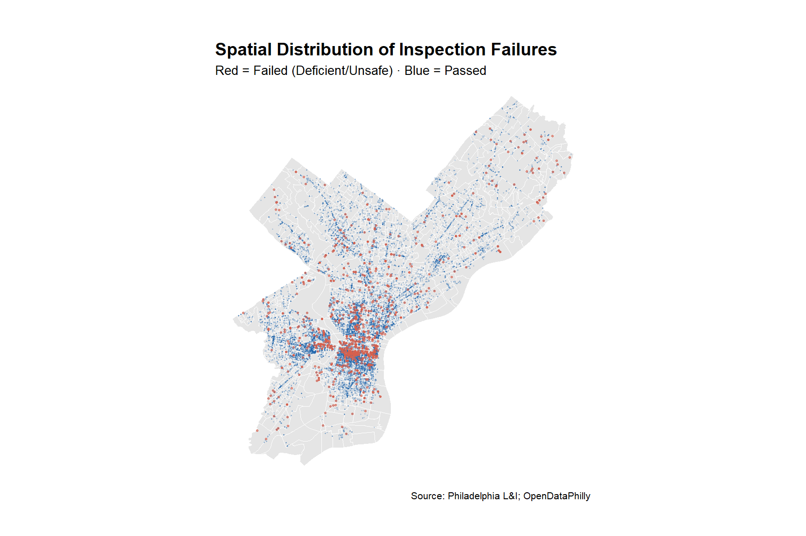
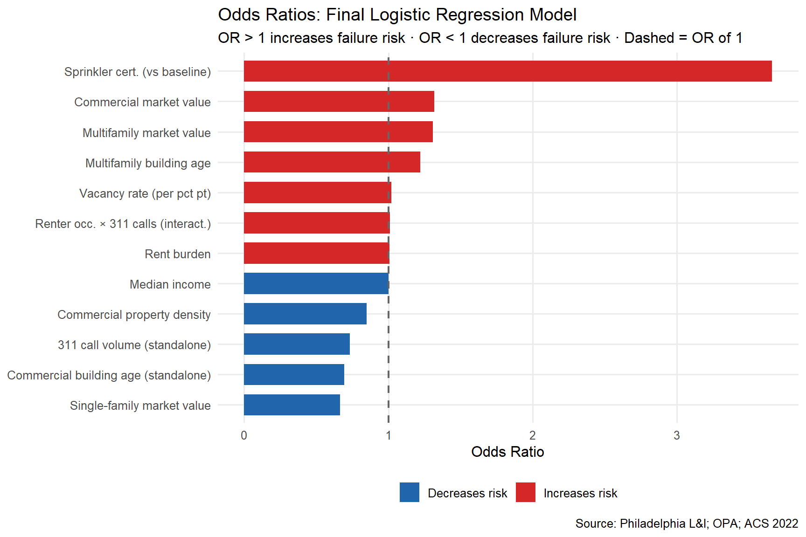
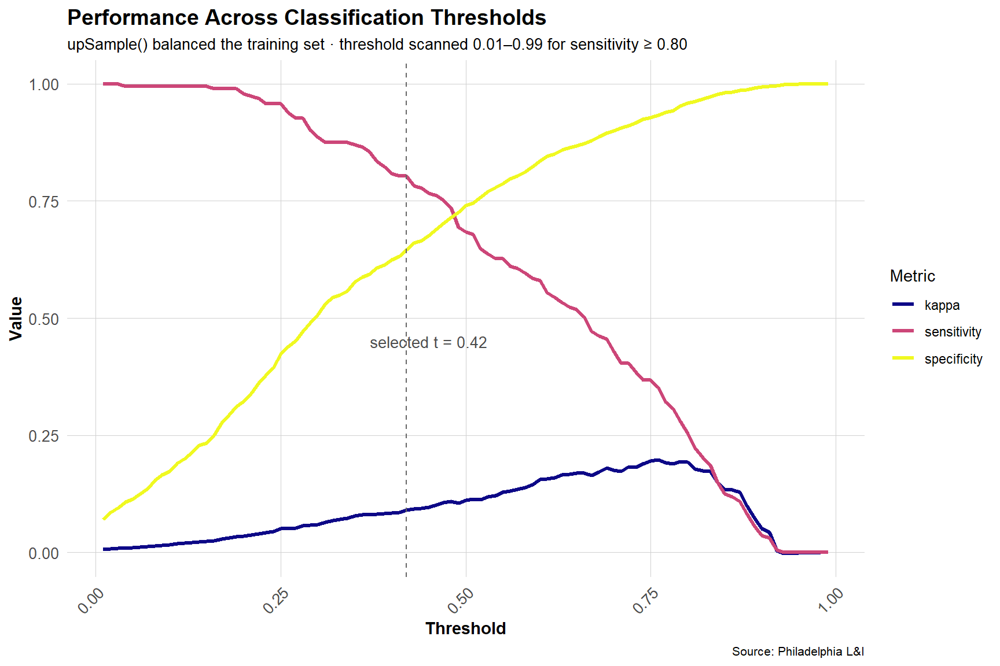
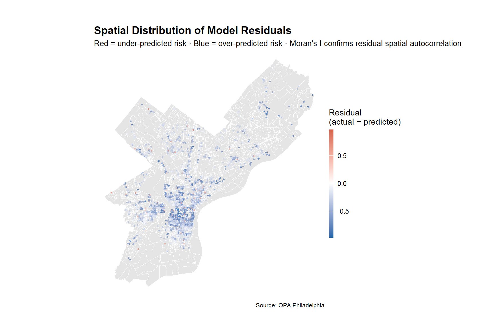

Predicting High-Risk Buildings in Philadelphia
From Reactive Inspections to Risk-Based Prioritization
Liz Crouse, Shaurya Chauhan, Arzoo Gupta
2026-04-28
The Problem: A Reactive Inspection System
Philadelphia’s building inspection system is driven by complaints, not risk:
- Only ~7% of rental units inspected annually (Pew Charitable Trusts, 2021)
- Fewer than 45 inspectors citywide (Pew, 2021)
- Complaint-driven system → systematic underreporting in vulnerable communities (Urban Institute, 2022)
- All buildings treated equally despite highly unequal risk
The city lacks a systematic way to prioritize which buildings need inspection most.
Why This Matters: Inspection Results

These results show that only a small share of inspections fail (~5%).
However, these failures are not random—they cluster and follow patterns.
→ Opportunity to prioritize inspections based on risk.
Failure Rates Vary by Certification Type

Certification type is an important control—we account for this in the model.
Where Do Failures Cluster?

Final Model Predictors and Key Interactions
What we capture
- Spatial risk
- Proximity to other inspections
- Distance to transit and city center
- Neighborhood context
- Vacancy rate
- Income and rent burden
- Share of renter-occupied housing
Behavioral & environmental signals
- 311 complaint activity
- Property characteristics (age, value, density)
- Certification type (controls for inspection differences)
Key idea
- Risk is shaped by how these factors interact — not any single variable
What Drives Failure? Odds Ratios

Handling Class Imbalance and Threshold Selection

We selected a threshold that prioritizes identifying unsafe buildings.
This ensures we capture most high-risk properties, even if it means inspecting some low-risk ones.
Where Does the Model Struggle? Residual Map

References
Data Sources
- Philadelphia Department of Licenses & Inspections - Building Certifications (OpenDataPhilly)
- City of Philadelphia Office of Property Assessment -
opa_properties_public.geojson
- Philadelphia 311 Service Requests - Fire Department calls (OpenDataPhilly)
- U.S. Census Bureau - American Community Survey 5-Year Estimates, 2022, block group level
References
- Pew Charitable Trusts (2021). Philadelphia’s Rental Housing Challenge.
- Urban Institute (2022). Who Is Left Behind by Complaint-Based Code Enforcement?
- National Low Income Housing Coalition (2022). Out of Reach: The High Cost of Housing.
R Packages
tidyverse · sf · tidycensus · tigris · caret · pROC · spdep · kableExtra